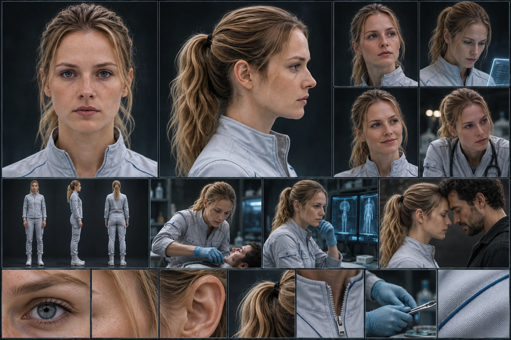

OVERVIEW
Medicine that serves people
Leila is a medical professional from the Zero Plan. She first appears as the physician who has treated Dmytro and accompanies him on his first exploratory transition. Her role later expands considerably: she coordinates large-scale medical programmes, organises the supply of medical capsules and helps build a system capable of providing care to civilians and military personnel across different Plans.
Name: Leila
Origin: Zero Plan
Profession: physician / medical professional
Main fields: medical care, medical capsules, medical-resource coordination and professional training
Related characters: Dmytro, Nairin, Isaac, Zaib, Sukhum and Marat
Relationship: accepts Marat's proposal of marriage
Appearance: based on the author's visual reference — light hair tied back, light-coloured eyes and a pale work uniform with blue details
Age and height: not established in the manuscripts
PERSONALITY AND COMMUNICATION
Open, persistent and responsible
At her first meeting with Dmytro, Leila comes across as open and lively. She introduces herself easily, asks many questions and shows genuine interest in people and events. Her directness can surprise others, but it does not prevent her from becoming focused when work begins.
In difficult situations, Leila is able to take on substantial responsibility. She does not limit herself to individual medical tasks; she sees how equipment, staff, training, production and logistics depend on one another. The scale of the work also takes its toll: after a prolonged period of continuous medical response, she becomes exhausted and needs time with Marat.
BEGINNING OF HER STORY
A physician among the first travellers
In the first book, Dmytro meets Leila as a medical professional who has already treated him. She is included in the expedition because a physician who knows the patient may be better prepared to help if something unexpected happens. It is also Leila's first transition between Plans.
During the journey, she joins Dmytro, Nairin and the guards in exploring another world. The scenes of rest reveal her lively curiosity; later, she is present when the group meets Grandfather Mykola.
MEDICAL SYSTEM
From individual care to an inter-Plan programme
After receiving new authority from Sukhum, Leila coordinates a medical programme on a scale involving tens of millions of people. She analyses the state of medicine on the First Plan, estimates the need for equipment and specialists, plans the production and movement of medical capsules, and reserves space at orbital stations and transport hubs.
In a conversation with Zaib, she states the need for capsules for forty million people by the end of the year. Zaib explains the production limits, transfers access to existing stock and launches an expansion of production. Leila accepts that some problems will have to be solved one by one — supply components, staffing and transport.
Her work is not limited to technology. Leila understands that a capsule cannot replace a physician or correct a wrong diagnosis. That is why, in the second book, she helps launch a medical institute where practising doctors and interns are taught a new generation of medicine.
WAR AND RECOVERY
Care without dividing people into sides
In the third book, after heavy fighting, Leila describes the use of the full medical capacity of all three Plans. The wounded were brought back as quickly as possible. After the fighting, her efforts turn to recovery; both defenders and attackers receive medical help — everyone who can still be saved.
The work exhausts her, but Leila does not lose her compassion or personal warmth. In a scene with Marat, she finally allows herself to stop, rest and spend time with someone close to her.
PERSONAL STORYLINE
Leila and Marat
Their relationship develops against a background of constant work and war. Marat visits Leila as she finishes work, and their closeness gradually grows. At the end of the second book, he proposes. Leila initially jokes about “patient syndrome”, but accepts when he asks her directly.
In the third book, they openly support one another. After a difficult period, Leila finds Marat, and he helps her put work aside and rest, at least for a little while.
REFERENCE DETAILS
Limits of confirmed canon
What the manuscripts confirm
- Leila is a medical professional from the Zero Plan.
- She treated Dmytro and accompanied him on his first transition.
- Sukhum gave her authority to coordinate a large-scale medical programme.
- She worked on the production, distribution and logistics of medical capsules.
- She helped launch a medical institute and train physicians.
- After the battles, she coordinated care for the wounded across three Plans.
- She accepted Marat's proposal of marriage.
Details from the visual reference
Light hair tied back, light-coloured eyes and a pale medical/work uniform with blue details. These details come from the supplied image, not from the manuscripts' prose descriptions.
What remains unknown
The three manuscripts do not establish Leila's exact age, height, full name, family or detailed biography before her meeting with Dmytro.
Appearances in the books
Book 1: meeting Dmytro, first transition and journey with Nairin and the guards. Book 2: development of the medical programme, expansion of medical-capsule production, launch of the medical institute and her relationship with Marat. Book 3: medical-system work after the battles and continuation of her personal storyline with Marat.